Traveling Trader¶
The Traveling Trader flies a scrap airship (the Tug) around the frontier and sets down somewhere new every few in-game days. Next to the Tug he puts up his Stall, and there you can spend the Frontier Scrip you earn from contracts on blueprints (recipe unlocks for the whole party), Backpack Expansions, his own dish recipes, and Outpost Boards. The more scrip your party spends with him, the better his reputation with you gets, and the better the stock he will sell you.
At a glance
- He camps 300 m to 1.5 km from the Hideout's Contract Board, in a random direction.
- He stays 2 to 3 in-game days (about 48 to 72 minutes of play), then moves on. He won't pack up while anyone is within 64 m of the camp.
- An orange marker on the map and compass shows where he is. Type
/traderin chat for his location and your reputation. - You pay only in Frontier Scrip, and it has to be in the buyer's own inventory.
- Each blueprint or recipe is bought once for the whole party.
- Reputation counts the party's lifetime scrip spent with him: Stranger (0), Customer (60), Regular (250), Partner (600).
- He sells 20 blueprints, 11 dish recipes, Backpack Expansions (800 scrip, from Partner) and up to 6 Outpost Boards (from Frontier Standing rank 3).
Finding the trader¶
Where he camps¶
When it's time to move, the trader picks a random spot between 300 m and 1,500 m from the Hideout's Contract Board. If the Hideout board hasn't been found yet, he measures from any Contract Board the party knows. He never camps on a lake.
When he arrives, every player gets a message such as "The Traveling Trader has set up camp about 900 m north-east of the Hideout". The distance is rounded to 10 m, or shown in km past 1,000 m.
The camp is only built when a player comes within 150 m of the spot. He then looks up to 60 m around it for dry, fairly flat ground and puts the Tug, the Stall and himself there. If there's no dry ground nearby, the site shifts 125 to 250 m further on and he tries again. Because of this, the camp may sit a little off the place he first named.
Brand-new worlds
He only appears once the game knows where a Contract Board is, so in a new world he turns up shortly after the Hideout area has loaded. Until then, /trader says "Nobody has seen the Traveling Trader yet - visit the Contract Board at the Hideout".
Map marker and /trader¶
An orange quest marker hangs over the camp. It also shows on your compass and moves whenever he does.
Type /trader in chat to see:
- where he's camped (for example "about 1.2 km south-west of the Hideout - follow the orange marker")
- your party's reputation and how much scrip you've spent with him in total
See Chat commands for the other commands.
How long he stays¶
He stays 2 to 3 in-game days at each camp. The exact time is random within that range. One in-game day is 24 minutes, so that's about 48 to 72 minutes of play. The timer only runs while the game is running.
The Stall window's footer shows how long is left ("Packing up and moving on in ..."). When time runs out he waits until nobody is within 64 m of the camp, so he never leaves while you're shopping. Then he moves to a new spot. If you come across an old Tug or Stall from an earlier camp, it packs itself up. Only the current camp sells anything.
The Stall¶
Walk up to the Stall or to the trader himself and press Use to open the shop. The Tug is scenery only. The trader waves when you open the window, makes a deal gesture when you buy and nods goodbye when you close it.
The window¶
- Header: your reputation level, a 10-segment bar towards the next level, and how much more scrip you need plus what it unlocks (for example "190 more scrip to Regular: Rare blueprints"). It also shows how much scrip you're carrying.
- Tabs: Blueprints, Recipes and Gear. Each tab label shows how many items in it the party hasn't bought yet.
- Cards: 12 per page (4 x 3), with page arrows when a tab has more. Each card shows:
- the price, in gold if you can afford it and red if you can't
- Locked if you can't buy it yet
- Owned if the party already has it
- Detail panel: a 3D preview, the grade (rarity, cooking tier or Gear), a description, and the list of everything a blueprint unlocks. A locked item says what unlocks it.
Buying¶
- Pick a card.
- Press Buy. The button changes to Confirm purchase.
- Press it again within 3 seconds to buy.
The scrip comes out of your own inventory, not a chest. If you don't have enough, the button says "Need N more scrip". Blueprints and recipes unlock straight away for everyone in the party, and everyone sees "
Carry your scrip
The Stall only counts the scrip in the inventory of the player pressing Buy. Scrip in a chest at base doesn't count, and you can't combine scrip from several players for one purchase. Hand it to one player first.
Reputation¶
Your reputation with the trader is the party's lifetime scrip spent at his Stall. Every purchase counts: blueprints, dish recipes, Backpack Expansions and Outpost Boards. Reputation never goes down.
| Level | Lifetime scrip spent | Unlocks for sale |
|---|---|---|
| Stranger | 0 | Common blueprints |
| Customer | 60 | Uncommon blueprints |
| Regular | 250 | Rare blueprints |
| Partner | 600 | Legendary blueprints and Backpack Expansions |
Reputation belongs to the whole party (the world), not to each player. Anyone's purchases raise it for everyone. When you reach a new level, everyone gets a message such as "The Traveling Trader now counts you as a Regular - Rare blueprints are for sale".
Locked items stay on show, so you can see what's coming. Dish recipes and Outpost Boards don't need any reputation (see below).
Blueprints¶
A blueprint unlocks one or more crafting recipes for the whole party, permanently. Prices depend on rarity:
| Rarity | Price | Reputation needed |
|---|---|---|
| Common | 30 | Stranger |
| Uncommon | 72 | Customer |
| Rare | 144 | Regular |
| Legendary | 300 | Partner |
Some blueprints build on another one, which the party must own first ("Needs X first").
| Blueprint | Rarity | Price | Unlocks | Needs first | |
|---|---|---|---|---|---|
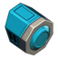 |
Floodlight | Common | 30 | Floodlight | |
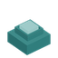 |
Light Sensor | Common | 30 | Light Sensor | |
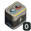 |
Rechargeable Battery | Common | 30 | Rechargeable Battery | |
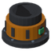 |
Pipe Coupler | Common | 30 | Pipe Coupler | |
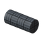 |
Carbon Pipes | Common | 30 | Carbon Pipe, Carbon Pipe (Long), Carbon Pipe Bend, Carbon Pipe T, Carbon Pipe Cross | |
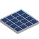 |
Solar Panel | Uncommon | 72 | Solar Panel | |
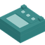 |
Charge Controller | Uncommon | 72 | Charge Controller | Solar Panel |
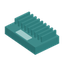 |
Inverter | Uncommon | 72 | Inverter | Solar Panel |
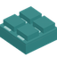 |
Charger | Uncommon | 72 | Charger | Rechargeable Battery |
| Wireless Link | Uncommon | 72 | Wireless Transmitter, Wireless Receiver | ||
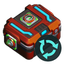 |
Scrapper | Uncommon | 72 | Scrapper | |
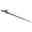 |
Carbon Rod | Uncommon | 72 | Carbon Rod (fishing) | |
| Signal Parts | Uncommon | 72 | Angle Encoder, Gain, Rate, Mixer, Flip, Clamp, Set Point, Scope | ||
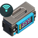 |
Remote Control | Rare | 144 | Remote Controller, Remote | |
| Remote Camera | Rare | 144 | Remote Camera | Remote Control | |
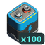 |
Mega Battery | Rare | 144 | Mega Battery | |
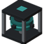 |
Gyro Flywheels | Rare | 144 | Gyro Flywheel (3x3), Gyro Flywheel (1x1), Gyro Flywheel (5x5) | |
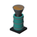 |
Throttle Thruster | Rare | 144 | Throttle Thruster | Signal Parts |
| Teleport Pad | Legendary | 300 | Teleport Pad | ||
| Mega Battery Bank | Legendary | 300 | Mega Battery Bank | Mega Battery |
All 20 blueprints together cost 2,046 scrip: 150 for the Commons, 576 for the Uncommons, 720 for the Rares and 600 for the Legendaries. The recipe reference lists what each one costs to craft and where.
Trader dish recipes¶
The Recipes tab sells the trader's own dishes. You can't research these at the Cookbot like other dishes. You can only buy them, and each is bought once for the whole party. See Kitchen for how cooking and research work.
They don't need any reputation. Instead, a trader dish unlocks for sale once the party has researched any other dish of the same tier. Until then it shows "Research a
| Dish | Tier | Price | |
|---|---|---|---|
| Trail Hash | Campfire (1) | 36 | |
| Fish & Chips | Campfire (1) | 36 | |
| Shepherd's Pie | Homestead (2) | 72 | |
| Borscht | Homestead (2) | 72 | |
| Berry Cobbler | Homestead (2) | 72 | |
| Moonfin Curry | Expedition (3) | 80 | |
| Smoked Eel Rolls | Expedition (3) | 80 | |
| Orange-Glazed Steak | Expedition (3) | 80 | |
| Leviathan Steak | Frontier Feast (4) | 192 | |
| Ember Tarts | Frontier Feast (4) | 192 | |
| Crystal Sorbet | Frontier Feast (4) | 192 |
All 11 cost 1,104 scrip together. Trader dishes are a step above the other dishes of their tier:
- they restore 5 more health: 65 / 85 / 97 / 103 against 60 / 80 / 92 / 98 for tiers 1 to 4
- their buffs last 20% longer
The dish reference has the full stats and ingredients.
Gear¶
Backpack Expansion¶
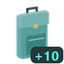
- Price: 800 scrip
- Needs: Partner reputation
A Backpack Expansion permanently adds a row of 10 slots to the inventory of whoever uses it, up to 10 extra rows per player. Unlike blueprints it's an item: it goes into the buyer's inventory, and you can buy as many as you like. Hand one to a teammate if you want. See Backpack for how to use one. Expansions can also turn up as rare contract rewards at the top Frontier Standing.
Outpost Board¶
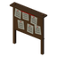
An Outpost Board is a Contract Board you set up yourself out on the frontier. It has to stand at least 1.5 km from every other Contract Board, on solid ground (not on a vehicle). Once it opens, new contracts are posted around it as well as around the Hideout. See Contracts.
- Needs: Frontier Standing rank 3 (from finishing contracts). It needs no trader reputation.
- Limit: 6 per party. After that the card says "No more Outpost Boards".
- Price: goes up by 200 scrip with each board the party buys:
| Board | 1st | 2nd | 3rd | 4th | 5th | 6th |
|---|---|---|---|---|---|---|
| Price | 400 | 600 | 800 | 1,000 | 1,200 | 1,400 |
All six cost 5,400 scrip together.
Earning scrip¶
Frontier Scrip is the reward for finishing contracts from the Contract Boards. Higher Frontier Standing brings better-paying contracts. See Contracts for how to earn it.
Multiplayer¶
Everything at the trader is shared by the party, except the scrip you pay with:
| Shared by the party | Per player |
|---|---|
| Camp location, timer and map marker | The scrip used for a purchase (the buyer's inventory) |
| Reputation (lifetime spend) | Where a bought Backpack Expansion or Outpost Board goes (the buyer's inventory) |
| Every blueprint and dish recipe bought | Backpack rows (each player's own, up to 10) |
| Outpost Boards bought (and so their price and the cap of 6) |
- Any player can buy, and everyone sees the purchase and any reputation level-up announced in chat.
- The trader stays put as long as any player is within 64 m.
Old worlds and new worlds¶
- New worlds: none of the trader's machines and gadgets are known at the start. You get the Floodlight, Solar Panel, Scrapper, Teleport Pad and the rest by buying their blueprints from him.
- Worlds from before the trader was added: any of those recipes the world had already unlocked stay unlocked, because unlocks are saved with the world. They show as Owned at the Stall, and the party only needs to buy the ones it never had.
- The trader dish recipes were never researchable, so every world buys them from him.
Tips¶
Fast track to Partner
Every purchase counts towards reputation, dishes and Outpost Boards included. Buying all five Common blueprints (150 scrip) gets you past Customer. Add a few Uncommons, or the early dish recipes, to reach Regular (250). Buying all the Common and Uncommon blueprints comes to 726 scrip, which is enough for Partner (600) by itself.
Plan blueprint chains
The Charge Controller and Inverter need the Solar Panel. The Charger needs the Rechargeable Battery, the Remote Camera needs the Remote Control, the Throttle Thruster needs Signal Parts, and the Mega Battery Bank needs the Mega Battery. Buy the base blueprint first so its follow-ups are ready when your reputation catches up.
Research one dish per tier
You only need to research one ordinary dish of a tier at the Cookbot to open all of the trader's dishes for that tier. Their extra health and longer buffs make them some of the best food in the game for their tier.
Shop before he leaves
Check the footer of the Stall window for how long he's staying. If the timer is about to run out, he still won't leave while someone is within 64 m. Once you walk away he'll move on, and he can land up to 1.5 km away.
Put an outpost near his range
His camps are measured from the Hideout, but contracts are posted around every open board. An Outpost Board set up along a route you travel often gives you a place to hand in contracts and pick up new ones on the way.